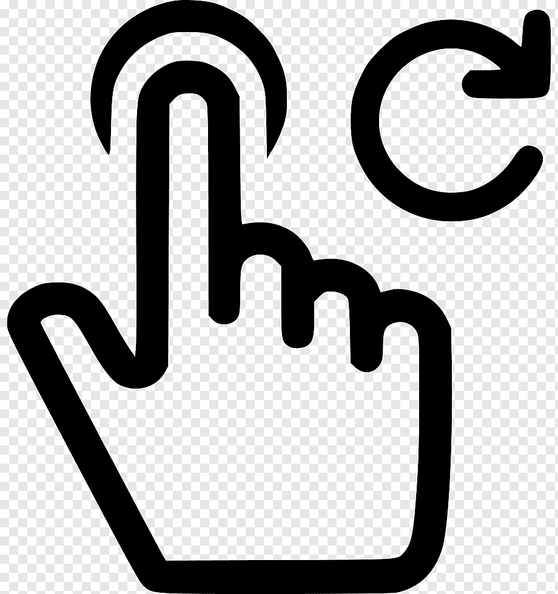

A Società Sportiva Calcio Napoli, ou simplesmente Napoli, é um clube de futebol italiano, sediado na cidade de Nápoles, na região da Campania, no sul da Itália, fundado em 1 de agosto de 1926. (Napoli 1986 - 1990)

Osimhen artilheiro da temporada com 21 gols
Kvaratskhelia o talento georgiano surpresa do campeonato
Insigne um dos idolos do clube com uma comemoração marcante
Dupla Insigne & Milik
Trio Cavani, Hamsik e Lavezzi
Hamsik meio campista idolo
Hamsik, Maradona e Mertens idolos marcados na historia do clube